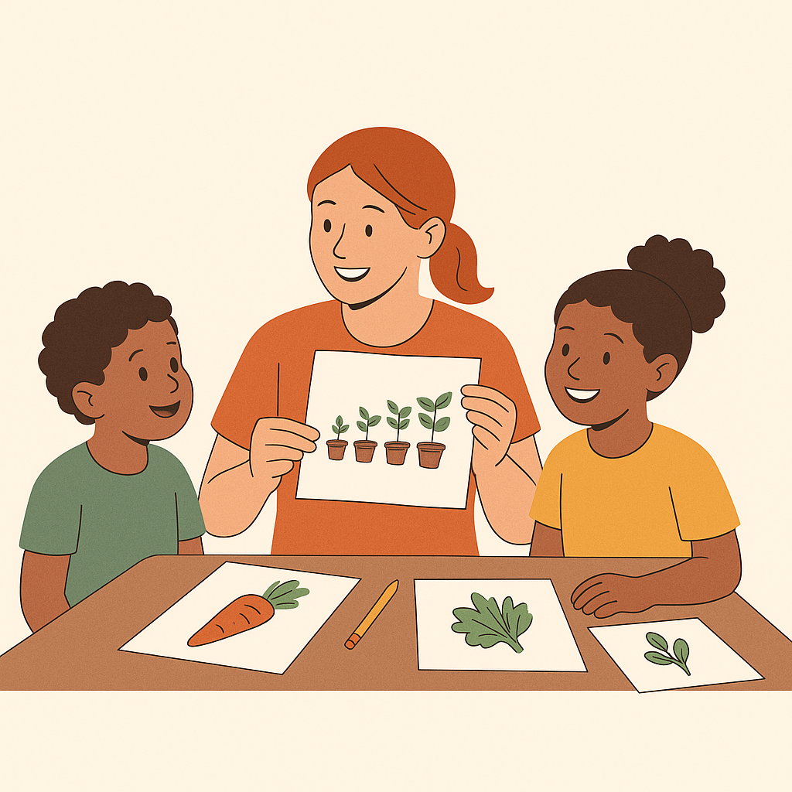
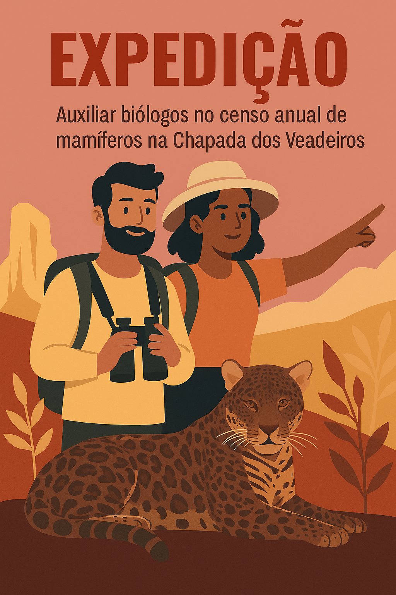

Ação em Campo
Mutirão de Limpeza na Praia Grande
Junte-se a nós para um grande mutirão de limpeza, preparando a praia para a temporada de desova das tartarugas marinhas.
Ver Detalhes e Inscrever-seExplore os projetos que precisam da sua ajuda e encontre a causa que move você.
Junte-se a nós para um grande mutirão de limpeza, preparando a praia para a temporada de desova das tartarugas marinhas.
Ver Detalhes e Inscrever-se
Precisamos de voluntários com experiência em pedagogia para ajudar a criar o material didático para nossa nova oficina de hortas comunitarias infantil.
Ver Detalhes e Inscrever-se
Expedição de 5 dias para auxiliar biólogos no censo anual de mamíferos na região da Chapada dos Veadeiros. Requer bom preparo físico.
Vagas Preenchidas